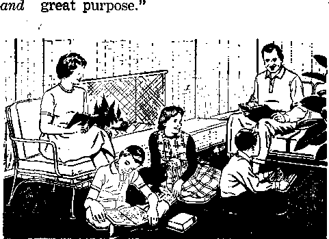
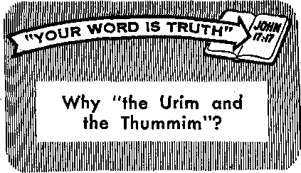

Religious Freedom Upheld in Medical Treatment
PAGE 12
Indoctrination and You
PAGE 16
Good Reasons for Keeping Clean
PAGE 24
AUGUST 8, 1965
THE REASON FOR THIS MAGAZINE
News sources that are able to keep you awake to the vital issues of our times must be unfettered by censorship and seifish interests. ‘'Awake!" has no fetters. It recognizes facts, faces facts, is free to publish facts, ft is not bound by political ties; it is unhampered by traditional creeds. This magazine keeps itself free, that it may speak freely to you. But it does not abuse its freedom. It maintains integrity to truth.
The viewpoint of “Awake!" is not narrow, but is international. "Awake!" has its own correspondents in scores of nations. Its articles are read in many lands, in many languages, by millions of persons.
In every issue “Awake!" presents vital topics on which you should be informed. It features penetrating articles on social conditions and offers sound counsel for meeting the problems of everyday life. Current news from every continent passes in quick review. Attention is focused on activities in the fields of government dnd commerce about which you should know. Straightforward discussions of religious issues alert you to matters of vital concern. Customs and people in many lands, the marvels of creation, practical sciences and points of human interest are all embraced in its coverage. "Awake!" provides wholesome, instructive reading for every member of the family.
“Awake!" pledges itself to righteous principles, to exposing hidden foes and subtle dangers, to championing freedom for all, to comforting mourners and strengthening those disheartened by the failures of a delinquent world, reflecting sure hope for the establishment of God’s righteous new order in this generation.
Get acquainted with "Awake!" Keep awake by reading "Awake!”
PuELranKn Simultaneously in the united States by the WATCHTOWER BIBLE AND TRACT SOCIETY OF NEW YORK, INC. 117 Adams Street Brooklyn, N.Y. 11201. U.S.A.
. AND IN ENOLAND BY
WATCH TOWER BIBLE AND TRACT SOCIETY
Watch Tower House, The Ridgeway London N.W. 7, England N. H. Knobs, Prasidawt Grant Suiter, Secretary
Printing this issue: 4,250,000
4d Atopy (Aastnlii. 5d; SMth Atrlea,3'/>c>
Yearly subscription rates
Offices for semimonthly editions
Caatda, IfiO Bridgel&nd Are., Toronto 19, (taL
Eagland, Watch Tower House,
The Bldgeway, London N.W. T
New ZMland, 631 New North Bd., Aukland B-W, 1
SOitk Afrlei, private Bag 2, P.O. Elandstontein, Tri.
(Monthly «d it Ions cost half the above rates.)
JBMifttaacei for sub&criptlonB should be sent to the oflfea In jw wu/J/y, whenfire read your remit-taucs to Brooklyn. Notice tf expiration is seat at least two Issues before subscription expires.
Now published in 26 languages
Semimonthly—Afrikaans, Cebu-Visayan, Danish, Dutch, En-tllsh, Finnish, French, German, Greek, Ilocano, Italian, Japanese. Korean, Norwegian, Portuguese, Spanish, Swedish, Tagalog, Zulu.
Monthly—Chinese, Clnyania, Hiligayuon-Vlsayin, Malayalam, Polish, Tamil, Ukrainian-
CHANGES IF ADDRESS ihoild reach HI thirty days before yoir Moving date. Give u yoir old and new addrau (If pwiblB, yovr old address label), Write Watch Tower, Watch Tower House, The Ridgeway, London N.W. 7, Ebi land.
Entered as ucond^lass matter at Brooklyn, N.I. Printed in England
The Bible translation regularly aaed In "AvainP' It the New World Tmtlatlw of the Hely ScrFptem, 1961 edltlaa. When other trauiatlMt are u*d, this li olnriy marked.
CONTENTS
Appreciating God’s Inspired Word
Religious Freedom Upheld in
Air Pollution or Cigarette Smoking? 15
Communism Viewed as State Religion 23
Good Reasons for Keeping Clean
‘‘Your Word Is Truth”
Why "the Urim and the Thummim”?
Psychiatrists on Suicide Lists 15
Watching the World
V’oltxn* XLVI London* England, August 8, 1965 Number 15
LAST February there was a pair of stunned parents in the town of Haworth, New Jersey. Stunned at what? Stunned at learning that their sixteen-year-old son was picked up by the police because of operating a gambling casino right ir. their own basement Stunned also were the parents of the some fifty teen-agers that were regular patrons of this gambling den. “They thought their children were skating, sledding or other things like that,” the police chief reported.—Newsweek, March 8, 1965.
What accounted for it till? Obviously those parents had been blind to what was going cn in the minds and hearts of their children. And why had they been blind to these things? Could it have been because of their lack of mature, unselfish, parental love; because of their being so concerned about their own immediate interests and pleasures that they neglected becoming confidants of their children? That could well have been.
Although there is a saying that love is blind, it is also true that love has eyes, that it helps one to see many things that he otherwise would not be able to see. It all depends upon vlhat kind of love it is. Erotic love, based solely on physical attraction, often blinds a person, causing him to become infatuated with one of the opposite sex. But the love that manifests itself in an unselfish interest in others is not blind, not even to their faults. It sees those faults even as others do, but it views them in a different light, sympathetically, yes, and with empathy, as if such were one’s own faults. It therefore mercifully hides them from others, even as God’s Word shows; “Love covers a multitude of sins.” “Love covers over even all transgressions.”—1 Pet. 4:8; Prov. 10:12. Since love covers over the faults of others, it is able to see the good In other persons. It does not let a few faults blind it to the good qualities in persons. It sees their possibilities, their potentials. Basically, love is inclined to be trusting—not that it is gullible—but certainly it is not unduly suspicious.—1 Cor. 13:4-8.
Love has eyes also because it is not blinded by pride, prejudice or greed. It is able to see fine qualities in others, not looking down on them because they may have a foreign accent, a different skin color or be lacking in education or "cul-tore.”
Since “God is love," he, above all else, has eyes to see the good that resides in his imperfect creatures. (1 John 4:8) He cculd see the loyalty of his servant Job, and so when Satan the Devil charged that very prosperous Job served God solely for what he got out of it, God took the side of Job and gave Satan free rein to prove his contention. Job remained loyal in spite of all that Satan could do, thereby proving Satan false and God true. Satan, because of selfishness, took the wrong, the negative, view of Job; God, because of his love, took the right, the positive, view. —Job, chapters 1, 2 and 42,
, Jesus Christ, the Son of God, imitated his heavenly Father in this, even as in so many other respects. Because of his love he also h^d eyes to see good in people, in those that his self-righteous contemporaries looked down upon and despised, such as the tax collectors, the harlots and the Samaritans. Even among the Pharisees he was able to see when one was sincere and so chose him to be his apostle to the nations, the apostle Paul.—Matt. 9:9; Luke 7:36-50; 18:10-14; 19:2-9; 1 Tim. 1:12-16.
Yes, love has eyes that see deeper than what appears merely on the surface. It can see when a person is really trying and working against odds and so gives him credit for it, not judging solely by the actual results. It can enjoy a child’s or neighbor’s efforts to entertain and please even though he is no virtuoso or genius. It might be said that one of the things that characterizes a really good teacher is this faculty of seeing possibilities in students because of love.
Love has eyes also in other ways. On the one hand, it sees' the many opportunities that daily present themselves for doing good, for being helpful to others; and, on the other hand, it has eyes to see the many little kindnesses that others render. Are you a husband? Love will enable you to see both the many little opportunities you have to bring happiness to your wife by expressions of affection and appreciation in word and action and the many efforts of your wife to make herself and her home attractive and pleasing to you. Are you a wife? Love will help you to see and appreciate the many ways, large and small, by which your husband gives proof of his loyalty to you, and it will also make you sensitive as to the state of his health and your many opportunities of cooperating with him.
The same principle applies to parents and children and their relationship^ with one another. Love will enable parents to see both their many opportunities to train their children in the right way and their opportunities to spend time with them, choosing such hobbies and recreations as their children can enjoy and share. (Deut. 6:6, 7) Love enables parents to see when their children are disturbed, discontented, perplexed, troubled and heading for trouble. And love will enable children to $ee what sacrifices their parents are making for them and their own opportunities to be helpful to mother in the kitchen as well as in the rest of the house and to assist father in caring for the many things that he must do.
In particular does the principle that love has eyes apply to the Christian minister. It will enable him to see his many opportunities for doing good at his place of worship, such as greeting the lonely, comforting the depressed, welcoming the stranger and sharing one’s Bible, Bible-study aid or songbook with one who may be without it. And it will keep’him active in the field ministry, for love enables him to see the great need for spiritual food on the part of so many and will impel him to do all he can to satisfy those who are conscious of their spiritual need.—Amos 8:11; Matt. 5:3.
Truly far-reaching are applications of the principle, Love has eyes!
IT IS cozy beside the GOD '5 log fire. The embers glow in friendly warmth, and from time to time lively sparks shoot out into the screen. Evenings here in the mountains are cool, it is comfortable indoors, but the time has not been FJ/Z) D /'J wasted. There has been rr fine opportunity for reading and study, and John Jones and family have put their time to good account. Oh, yes, let us introduce them. On the other side of the fireplace from John is his wife, Mary, and seated around in front of the fire are their three children, Mark, Ruth and Thomas. Eager students all! They are surrounded by Bible translations, which they put to good use, and other Bible-study helps. But let us move closer and listen to the conversation.
the Greek Scriptures are actually giving
support to the Hebrew Scriptures,” he declares. “This is shown by the crossreference in the margin of my large-print edition of the New World Translation Bible. From Revelation 7:17 it refers us to Isaiah 25:8. Let me read it. . . . ‘He will
actually swallow up death forever, and the Lord Jehovah will certainly wipe the yy^y^y^^/jt^ars from all faces.’ And see what the "next verse says!—‘And in that day one
will certainly say: “Look! This is our God. We have hoped in him, and he will save us. This is Jehovah. We have hoped in him. Let us be joyful and rejoice in the salvation by him.” ’ ”
“A wonderful promise!” exclaims Ruth. “And did you all notice in Revelation chapter 7, verse 9, that ‘a great crowd’ from all mankind is to share in the fulfillment? What a happy prospect—instead of tears, everlasting life on a paradise earth!”
Mother chimes in: “The thrilling thing to me is the way both Hebrew and Greek Scriptures support each other in underlining these promises. The Bible is truly a grandly harmonious book throughout, from Genesis to Revelation.”
“And this grand harmony,” remarks
The group has just completed a family study of the Watch Tower Society’s book “All Scripture Is Inspired of God Beneficial,” and John Jones is taking his family through a review of some of the high points. The discussion has turned to the comforting topic of a new order without death,
“You know,” observes John, “the Revelation emphasizes this grand hope twice, both at chapter 21, verse 4, and at chapter 7, verse 17, and in each place it uses identical words, stating that God ‘will wipe out every tear from their eyes.’ ”
It is Mark’s turn to speak. “Here
John, “is due to the Bible’s outlining one theme—a theme that highlights Jehovah’s
Young Thomas asks, “What is that theme, Daddy?”
“It must be something in connection with Christ,” suggests Ruth.
John Jones agrees. “Yes, it is. In fact, it is suggested in the very words that both Jesus and his forerunner, John the Baptist, used in starting out their respective ministries. Do you remember how they announced themselves?”
“I think I do,” answers Mark. “Wasn’t it something like, ‘Repent, for the kingdom of the heavens has drawn near’?”
John commends his son: “Very good, those are the exact words at Matthew 3:2 and 4:17, But much began to be spoken concerning God’s kingdom long before the days of Jesus. The Greek Scripture writers who wrote of Jesus and his ministry quoted repeatedly from the ancient Hebrew Scriptures, where prophecy upon prophecy had pointed forward to God’s coming kingdom by the Messiah, Christ. In fact, the very first prophecy in the Bible is a Kingdom promise. Do you remember where we find that prophecy, Ruth?”
“Why, yes, Daddy! At Genesis 3:15.”
“And, Thomas, do you remember what this prophecy tells us?”
“Yes, Dad—it is about the Seed of God’s woman in heaven bruising Satan and his seed, and that includes wicked rulers and people here on earth.”
“Very fine, my son. And so, through the first prophecy in the Bible, given nearly six thousand years ago, we begin to understand that God will bring forth a Seed from his wifely organization of heavenly, angelic creatures, to wipe out Satan and all his works, and reestablish righteousness in all the universe, including earth. So, how may we describe the theme of the Bible? Why, this way—the sanctification of Jehovah's name through the Kingdom Seed.”
Ruth pipes up: “But, Daddy, I don’t see any mention of a ‘Kingdom’ here in Genesis 3:15.”
“True,” John agrees, “but a notable ‘Seed’ is mentioned, and very soon in the Bible record we find many references to a Kingdom linked with this Seed.”
“I suppose,” comments Mark, “that the famous promise to Abraham about his seed becoming like the stars, for multitude enters into this picture.”
“Yes,” explains John, “and not only was Abraham promised a 'seed,’ but he was told by Jehovah, here at Genesis 17: 6, that ‘kings will come out of you.’ That was about thirty-nine hundred years ago.”
Mother adds her comment: “And we all remember Jacob’s inspired promise that the scepter of kingly authority would not turn aside from Judah. That’s at Genesis 49:10.”
John continues: “And then, 3,000 years ago, Jehovah made a Kingdom covenant with David, saying: ‘I shall certainly establish the throne of his kingdom firmly to time indefinite.’ Can anyone tell me where we find those words in the Bible?”
Mark answers: “Well, I remember that Second Samuel tells of the reign of David ...” At which Ruth joins in: "I have it —chapter 7, verse 13. Jehovah is speaking to David about his son: ‘He is the one that will build a house for my name, and I shall certainly establish the throne of his kingdom firmly to time indefinite.’ ”
“Up to this point,” father explains, “we can plainly see that the Hebrew Scriptures develop the theme of a Kingdom that will honor God’s name. But do the Greek Scriptures hold to this theme?”
“Surely they must,” suggests Ruth.
“And surely they do,” affirms John Jones. He turns to young Thomas: “Now, Junior, you have the large first edition of the New 'World Translation there, and you have learned how the marginal references lead us from one scripture to other related ones. You already have 2 Samuel 7:13 located, I see. Now, in the margin alongside, do you see a reference to the Greek Scriptures?”
“Yes, Daddy, Luke 1:33.”
“Well, Thomas, that carries us through another thousand years,1 down to Jesus’ day. Why not turn to it, and read it for us? And you may as well read verse 32 as well as verse 33.” ,
Thomas has the place: “This is about Jesus, and it says;. 'This one will be great and will be called Son of the Most High, and Jehovah God will give him the, throne of David his father, and he will be king over the house of Jacob forever, and there will be no end of his kingdom.’ ”
Mother speaks up: “So in the light of the Greek Scriptures, the millenniums-old Kingdom promise becomes clear! Jesus is the Kingdom Seed. But I wonder if the Hebrew prophets throw more light on this? For example, Luke here gives a crossreference to Daniel 7:14.”
Mark hastens to turn up the reference. “Ah, yes,” he comments, “in this chapter it speaks of 'someone like a son of man,’ 'Son of man’—that’s one of the expressions used in the Greek Scriptures in referring to Jesus, isn’t it? This is what it says: ‘And to him there were given rulership and dignity and kingdom, that the peoples, national groups and languages should all serve even him. His rulership is an indefinitely lasting rulership that will not pass away, and his kingdom one that will not be brought to ruin.’ That must mean an everlasting Kingdom over all mankind!”
“Very true,” affirms Mary Jones. “These marginal cross-references are becoming very interesting. And here’s another one —from Daniel to Revelation 11:15.”
“May I read this one?” $sks Thomas. His clear, young voice sounds forth: “And the seventh afigel blew his trumpet. And loud voices occurred in heaven, saying: ‘The kingdom of the world has become the kingdom of our Lord and of his Christ, and he will rule as king for ever and ever.’ ”
“Well read!” says his father. “And note that, in verse 18, the scripture tells when this happens—at a time when 'the nations became wrathful’ and mankind is ‘ruining the earth.’ Does not this clearly indicate our day, with its world wars and earthwide commotiop<?7’"
“With most people so afraid about the future, how glad we c: in be to have this real hope of the Kingdom!” exclaims Mary. “But may I carry this ch ain reference study just one step farther? Here, at Revelation 11:15, is a reference Io Psalm 145:13. Ruth, would you read It for us? And I suggest you start from verse 10.”
Ruth reads Mth warm expression: “AU your works will laud you, O Jehovah, and your men of loving-kindness will bless you. About the glory of your kingship they will talk, and about your mightiness they will speak, to make known to the sons of men his mighty acts and the glory of the splendor of his kingship. Your kingship is a kingship for all times indefinite, and your dominion is throughout all successive generations."
Her mother takes up the psalmist’s words: “ ‘The glory of the splendor of his kingship’! How those words should stir in all of us the desire to explain the wonderful truths of Jehovah’s kingdom by Christ to all whom we meet!”
John Jones smiles around at his family. “This voyage of exploration through the New World Translation of the Bible has certainly been interesting,” he comments. "What a marvelous unity of theme is to be found in God's Word—-all the way from Genesis to Revelation! Indeed, the promise of Genesis 3:15 concerning the ‘Seed’ to bruise the serpent’s head is' amplified progressively all the way through to Revelation. And now we live in the climactic day when Christ hurls the Devil out of heaven down to earth. Yes, right now he is getting ready to destroy the Devil’s ‘seed’ on earth, and to throw that old serpent and his demons into the abyss. All these thrilling events, my children, you find described in the closing pages of Revelation, at 12:1-
12, and 19:11-16, and 20:1-3, Truly, we must marvel at the" magnificent support the Greek Scriptures give throughout to the entire body of the Hebrew Scriptures. Indeed, our precious Bible is all one Book, inspired of God!”
A smoldering log falls to the grate, and dying embers remind the family that it is bedtime. But appetites have been whetted for further discussion on another night. Shall we at that time join John Jones and family once more at this cheerful fireside?
By "Awake!" correspondent in Hong Kong
WOULD you like to have an Oriental servant? Look around you. You may already have one, very little and very old, but very helpful. You may find him in the page you read or the ink on it, the bread on your table or the plywood tabletop under it, the wallpaper on your walls or the linoleum that meets it at the edge of the floor, the fire-fighting foam your fire department uses or the lifesaving streptomycin in your doctor’s satchel. For these are only a few of the brand-new twentieth-century faces of one of the oldest Orientals alive today, the little soybean.
This little servant of man grows on a plant that may reach from one to six feet in height. The beans or seeds, rich in protein and oil, form in long pods, a pod usually containing two or three round or oval beans. As for outward appearance, why, the soybean may come in shades of yellow, green, brown or nearly black. The soybean is at your service.
If you want the soybean’s past employment references before accepting him as your servant, here is- one that says, ‘‘The oil, as well as other portions of the soybean, has been credited with saving much of the Oriental population from starvation at different times.” The tiny old bean has been called the “cow of China” and “meat of the fields” because it has taken the pldce of milk and meat in Oriental diets.
Just hovV much protein is there in the soybean? Many varieties contain more than 40 percent protein, the protein resembling casein (the protein from milk) more closely than any other. Nutritionally the soybean has been said to have “more protein than beef, more calcium than milk and more of a fatty substance called Lecithin than eggs.”1 Little wonder that in China, Korea, Japan and many other lands soybeans are the major source of protein and fat for human consumption.
In Hong Kong, where dau-fu, a coagulated curd made from soybean milk, forms a staple part of the diet of rich and poor Chinese alike, at least one doctor is known to advise non-Chinese patients suffering from blood deficiency or low blood pressure to include the common curd in their diets as a high-potency blood builder.
As a fighter against malnutrition, beriberi and pellagra, the ancient bean has taken on one of its new faces in, Hong Kong, that of a specially processed soybean''milk. Not that milk from the soybean is new in itself, but new scientific methods have been developed that draw more of the value frojn the bean, improve and smooth out the flavor and produce a modern-style soft drink that outsells all the internationally known J'fizz and soda” coolers during Hong Kong’s hot, humid summer.
The part that this soft drink, Vitosoy, has had in the near eradication of beriberi and pellagra, considered the biggest killers in Hong Kong before World War II, must have been a considerable one, though much credit must rightly go to a raised living standard. The fact remains that it is chiefly during the postwar years that the new drink has made protein-rich refreshment available to all, even the poorest burden-bearing coolie. The corresponding fact is that during those same years the Colony, which maintained two hospitals for beriberi and pellagra, has come to the point where many a schoolboy would not even know what beriberi was.
Now then, if our little Oriental servant suits your ideas of helpfulness, maybe you would like to know where you can find him outside the Orient You will not find it hard, because the fame and usage of the little bean that was the delight, the food and the medicine of Chinese emperors away back in the third millennium B.C.E. have spread out through all the world.
In the eighteenth and nineteenth centuries some of the seeds were taken to the Jardin des Plantes in Paris and the Royal Botanic Gardens at Kew, England, and soybean crops were grown sparsely in Europe and to a greater extent in the Balkan States and Russia. Then the seeds spread to the United States; an 1804 American record mentions cultivation of the Soybean in Pennsylvania. Then the expedition ships of Commodore Perry in 1854 brought more varieties of soybeans to the United States from Japan. The United States Department of Agriculture took them up in 1898 and soybean acreages fanned out from southern to north-central states. They served as a much needed emergency crop when severe drought hit the cornbelt states in 1934.
During the two world wars the soybean plaht, which had served mainly for livestock fodder and soap oil since Manchuria started exporting it on a large scale in 1908, turned a new and beneficial face to its new users in the form of edible oils to replace the drastically reduced supply of fats whose sources were cut off by war. It was largely because of this that the United States production of soybeans shot up from 17,000,000 bushels in 1931 to nearly 200,000,000 in 1943; and now each year the United States grows, mainly in the north-central states, more than 600,000,000 bushels, putting the country ahead of the soybeans’ native land, China, ii^ production of that versatile legume.
With increased Soybean production and easing of the need for edible oils came greater versatility, the discovery of a multitude of new faces for the ancient bean. During the mid-1930’s it showed up in soap works, paint and varnish factories, linoleum and oilcloth industries and in the inkmaker’s laboratories. After that it branched out into the production of nonsputtering margarine and shortening, salad oil and dressings.
Soybean flour has become a meat binder in sausage, has given white bread improved taste and longer shelf-life as well as higher nutrition, has gone into greaseinhibiting doughnut mixes, flakier pie crusts and richer graham crackers.
Soybean grits have put more protein into pet foods, livened up cornflakes, improved the body of commercial soups and been used to make high-protein macaroni and noodles. They even helped in postprohibition America when beer-drinking Americans found the foam on their beer falling flat. It seemed that the malt available for brewing purposes was not the same quality as pre-prohibition malt. But all they had to do was add some soybean flakes and grits, and up*'went the foam, the body and even the flavor.
But twentieth-century science, not content, went on to isolate soybean protein and use it to replace and improve on egg albumin as the aerating agent in delectable candies, nontoughening marshmallow toppings, melt-in-the-mouth icings that held up better in cake-top decorations and low-fat toppings, similar to whipping cream, that would whip up to three times their unwhipped volume, assume any degree of stiffness without turning to butter and keep for five to ten days at forty degrees Fahrenheit, or indefinitely if frozen.
One of the latest nutritional faces of the soybean in the United States is that of a high-protein meat substitute that can be flavored like bacon, chicken or beef, yet please the most fastidious dietitian who abhors anything that breathes any suspicion of cholesterol and any surmise of possible heart or arterial disease.
Alongside these new technical developments the more traditional soy products of the Orient have gone into the competition to attract the appetite. Soy sauce has been a salty must on Oriental tables since over a thousand years before the Common Era. Soy sauce is made from whole beans, and its dark color and flavor are due to the processing and aging. The Japanese, who keenly enjoy their soy sauce, also export large quantities. Soy sauce is now used by many Westerners, who like it for seasoning meats, vegetables, gravies, sandwich spreads, salad dressings, as well as rice and other foods. Soy sauce is now well accepted as an ingredient in Worcestershire sauce, forming up to 30 percent of the finished product.
Then there is soybean milk. Many a Chinese has never tasted any milk other than that of the soybean. In the United States soybean milk has been fed extensively to infants allergic to cow’s milk. And in Medical Science, January 10,1957, there is an account of the treatment of infant disorders with soybean milk. Soybean developers have even produced a buttermilktype product said to have an agreeable characteristic flavor.
Moreover, even the humble bean curd dau-fu, as common as rice in the shops of Hong Kong, has been dressed up for American and European taste in the form of omelets, stuffing in peppers and as an ingredient in salads.
Now does it seem that our tiny Oriental servant has surely exhausted his strength by this time with all his nutritional services? Then let us look beyond the abundance of food he sets on our tables and into the lovely grained plywood tabletop itself. The huge plywood industry that gives us big uncut, unbroken stretches of expensive, grained wood surface as a thin slice on top of a “sandwich” of less expensive woods would not be possible without powerful bonding glues to hold the “sandwich” layers together. Yes, the soybean is used even to make glue! Soybeanbase adhesives have been found to be ideally suited for use with many woods. Following on the heels of soybean glue came numerous other industrial applications, such as adhesives for washable wallpaper and emulsifiers for fruit sprays.
Look further at the fine glossy papers in your modern magazines, with their lifelike photoengravings to delight the eye. The availability of soybean protein during the development of the process for machine-coating paper from 1935 to 1944 played, a large part in the development of this paper, the coatings of which must have an affinity for the ink films used in halftone engravings.
The lecithin that is a by-product of two of the processes for manufacturing soybean oil contributed to better soap lather, paints that brush and level better, stronger and longer-lasting rubber, longer-lasting lubricants, softer leather and improvements in the manufacture and sizing of textiles.
Soybean oil is used many ways commercially today. Perhaps you have opened up a can of sardines, tuna or other fish product packed in soybean oil.
The soybean properties that make beer foam better have also improved the firefighting properties of the foams your fire department uses to douse dangerous blazes. Yes, even the wonder drug streptomycin is cultivated in a thick broth made of soybean meal.
There seems to be no end to that for which the soybean can be used. Scientists believe there are still unknown substances in the soybean seed that can be used by man, but only through continued research may their identity and uses be known. Even now, it is said, with due credit to the Creator of this marvelous seed, that a more versatile plant than the soybean has never been known to science. If so much can be done with one plant’s seed now, how much more can be done with seeds and plants in the peaceful New Order under God’s kingdom!
Truly the little bean that came from the Orient has proved a devoted and versatile servant to the whole human family. And now the strange and intriguing situation has arisen where North America, the former recipient of the all-serving Oriental bean, has become its chief supplier to the world, producing more than half the world’s soybean crop and sending, in a recent year, one-fourth of its exports of soybeans back to the Oriental land of Japan.
How strange, indeed, that now the West should be asking the East: “How would you like to have an Oriental servant?”
Aisdical &a.ta.5tlopkti
Writing in the New York DaiZy News of March 27, 1965, Dr. T. R. Van Dellen discussed influenza pandemics, or epidemics of unusual extent and severity, reporting; “There have been 31 recorded pandemics in the world since 1510; the 1918 episode was the greatest medical catastrophe in history. There were 20 million deaths within a 20-week period."
RELIGIOUS FREEDOM
44 4TAO YOU mean to tell V me that we can’t give
John Doe in Room 418 a blood transfusion during or after his stomach resection, simply because he says he doesn’t want one? He can’t dictate to us how we are to practice our profession!’
“ ‘Yes, that is exactly what I mean to say,’ Dr. Wallace told his partner. ‘We can’t operate on him in the first place, Just because we think he needs surgery. We must first have his permission to do so. The same rule holds for other procedures. If his religious teachings have convinced him that it is wrong to permit someone else's blood to be put into Tiis body, we certainly have no right to go against his express wishes in that regard.’
“ ‘But isn’t that an interference with our right to exercise freely our professional discretion?’
“ ‘Yes, John, I suppose it is, to a certain extent,’ Dr. Wallace replied, ‘but we are, of course, at liberty to refuse to perform the operation, if we think the conditions demanded by the patient are too restrictive. After all, we readily respect the wishes of another religious group which opposes abortions. The principle is just the same.’ ”
Thus The New Physician, May 1964, reported on a situation facing many physicians and surgeons today.
Unfortunately, however, not all in the
in
Treatment
medical profession have proceeded in such an equitable manner. Some of them have sought court orders to force patients to submit to blood transfusions. Such was the case on May 7, 1964. Mrs. Brooks and her husband had previously signed a document releasing their doctor and the MacNeal General Hospital from all liability that, could result from not giving her blood transfusions and she was assured that they would not make any further efforts to try to get her to take blood.
In spite of these assurances the doctor, together with a number of others, including several assistant State’s attorneys, appeared before the Probate Division of the Circuit Court of Cook County in Illinois, asking that a conservator be appointed for Mrs. Brooks and that he be authorized to consent to the giving of whole blood transfusions to her. A conservator was appointed who consented to the giving of blood, and the transfusions were given. This entire proceeding robbing her of her liberty was done without her knowledge or presence or the knowledge or presence of her husband or other members of her family, although, at the time, they were known to be in the hospital as visitors and readily available.
An appeal was made to this court, asking, among other things, that an order be entered expunging the original order appointing a conservator, but the trial judge refused to grant any relief. However, on appeal, the Supreme Court of Illinois ruled in favor of Mrs. Brooks and all others who may in the future want the freedom to decide what kind of medical treatment they will accept. It stated that, although the transfusion had already been given, the case was not moot, that is, not futile, not serving any practical purpose, but was indeed one of substantial public interest; that it was desirable to hayp tin authoritative determination for the future guidance of public officials and that there was a likelihood of a future^ recurrence of the question.
In its decision the Supreme Court of Illinois made it plain that, while governmental actions cannot be proscribed on the basis of the First Amendment to the Constitution unless they were demofistrated to have a. coercive effect upon the individual, it was evident that here there was such a coercive effect. Drawing on history, the Court noted the reasons why the founders of the United States were so concerned with keeping Church and State separate, which concern resulted in the First Amendment’s guarantee of freedom for the individual fromz governmental interference with his religious beliefs and practices,
“The point at which interference therewith may be constitutionally permissible,” the decision went on tb say, was well illustrated by the bill establishing religious freedom in Virginia, which, among other things, stated: “ ‘To suffer the civil magistrate to intrude his powers into the field of opinion, and to restrain the profession or propagation of principles on the supposition of their ill tendency, is a dangerous fallacy which at once destroys all religious liberty’ and ‘it is time enough for the rightful purpose of civil government for its officers to interfere when principles break out into overt acts against peace and good, order.’ ”
The Court’s decision further showed that a forced blood transfusion could not be justified on the premise that vaccinations are made compulsory, as they are given for the purpose of preventing the spread of a dangerous disease, and there was no question about a disease spreading if Mrs. Brooks did not get a blood transfusion. Nor could it be justified, the decision held, on the basis that the law of the land forbids' the religious practice of polygamy, since blood transfusion was not a question of public morals as is polygamy; and it could not be likened to the law’s forbidding the handling of poisonous snakes as is practiced by some religions, since that practice is against public welfare, whereas in this case it was not a 'matter of public welfare.
Coming to the heart of the matter, the decision said: ‘‘Applying the constitutional guarantees and the interpretations therefor heretofore enunciated to the facts before us, we find a competent adult who has steadfastly maintainedxher belief that acceptance of a blood transfusion is a violation of the law of God. Knowing full well the hazards involved, she has firmly opposed acceptance of such transfusions, notifying the doctor and the hospital of her convictions and desires, and executing documents releasing both the doctor and the hospital from any civil liability which might be thought to result from a failure on the part of either to administer such transfusions ... No overt act or affirma-five act of appellants offers any clear and present danger to society—we have only a governmental agency compelling conduct offensive to appellant’s religious principles. Even though we may consider appellant’s beliefs unwise, foolish or ridiculous, in the absence of an overriding danger to society we may not permit interference therewith in the form of conservatorship established in the waning hours of her life for the sole purpose of compelling her to accept medical treatment forbidden by her religious principles, and previously refused by her with full knowledge of the possible consequences. In the final analysis, what has happened here involves a judicial at-tempt to decide what course of action is best far a particular individual, not withstanding that individual’s contrary views based upon religious convictions. Such action cannot be constitutionally countenanced.” (Italics added.)
In conclusion the Supreme Court of Illinois stated that, “while the action of the circuit court herein was unquestionably well-meaning, ... we have no recourse but to hold that it has interfered with basic constitutional rights."
Dr. Demange, in commenting on the decision of the Supreme Court of Illinois in declaring his action in the Brooks case illegal, among other things, stated: "If somebody wants to jump off a building, they have the right. You have a right to lead the type of life you want to and even choose death if you want to. On the other hand, it’s my job to save lives—not let people die if there is a simple medical answer.” But is the medical answer, blood transfusions, that simple and sure? Ac-, cording to the editor of the Medical Times, November 1964, “transfusion carries more dangers than most physicians realize.”
Commenting in the same vein as Dr. Demange, Dr. E. A. Piszczerk, president of the Illinois State Medical Society, among other things, said; “Individuals have no right to commit suicide and the refusal to accept blood in such cases is almost tantamount to committing suicide.” But note that expression “almost tantamount.” It is not truly, absolutely tantamount or equal. In fact, no physician can be absolutely certain that the blood given will not kill the patient rather than prove lifesaving, such are the risks of transfusing blood.
This very same argument was made by the defense attorney, Mr. Riley, namely, that freedom of religion did not go to the point of allowing people to endanger their own lives. However, one of the judges, Walter V. Schaefer, far from being impressed by it, observed: “Mr. Riley, I can just see 100,000 Christian martyrs turning over in their graves when you make that statement. They had the option of worshiping Caesar or being thrown to the lions. Would you dare to argue that they were not in their right minds in making their decision to be martyrs?”
Did those Christians commit suicide? Their persecutors and ridiculers may have accused them of doing so. But let us remember that that was not the purpose of their dying, they were not tired of life, they did not want to end their existence, as does the suicide. They did not prefer death to life, but merely preferred death to being unfaithful to their religious convictions and it was their persecutors that forced this choice upon them. Mr. Riley’s contention that freedom of religion does not allow a person to die for his .convictions is in sharp disagreement with the words of the Founder of Christianity, Jesus Christ, for he, on one occasion, stated: "Whoever wants to save his life will lose it; but whoever loses his life for my sake will find it.”—Matt. 16:25, 1950 Ed., margin.
The fact is that, throughout the: Holy Scriptures are found accounts concerning men of faith who had to choose between God's law and this life. When God told Abraham to offer up his son/was not God putting his law ehead of the life of Isaac to test Abraham? There were also the three Hebrews faced with the fiery furnace, and Daniel faced with the lions’ den; they could have avoided the threat of death, but again, God’s law came first. —Gen. 22:1-18; Dan. 3:1-30; 6:1-28; Heb. 11:35.
And so with Jehovah’s witnesses today. It is not a matter of letting them commit suicide. It is a matter of respecting their determination to remain true (to their religious convictions and principles, as they are so plainly and repeatedly stated in the Scriptures.—Gein. 9:3, 4; Lev. 17: 10; Deut. 12^3; Acts 15:19, 20, 28, 29.
Pertinent in this regard are the remarks of Dr. Edward Harris, chaplain of the University of Pennsylvania, as they appeared in Surgery, Gynecology <£ Obstetrics, April 1959: “One other thing 1 should like to say that pertains to the right of a uunsnan to take his own life. In terms of the Christian understanding of life we do not have such a right. Life comes to us as the gift of God and we hold it in trust to be used under God. But it does not seem to me that the question of suicide is at all pertinent to this case. The patient’s decision very clearly is that he is willing to sacrifice his life for the sake of something which he holds to be more precious than life, a purpose greater than himself. And this very rightly has been distinguished frdm suicide.”
Clearly, then, under the United States Constitution and particularly its First and Fourteenth Amendments, no governmental agency can presume to dictate what is best for a certain individual in the matter of medical treatments, and, in particular, not when such procedures run counter to dearly held religious convictions. For the guidance of doctors and hospitals, and for the protection of their patiepts, the Supreme Court of Illinois has made dear that the individual’s right to choose the medical treatment he desires is safeguarded by law.
Air Pollution or Cigarette Smoking?
• When the Royal College of Physicians of London published their study of smoking and lung cancer, it was pointed out that Finland, basically a rural country with virtually no air pollution, has the secondrhighest lung cancer death rate In Europe. Significantly, ivhat Finland does have is a great number of heavy cigarette smokers.
Psychiatrists on Suicide Lists
* “Studies in many countries have focused on the abnormally high number of suicides among physicians,” reports the Medical World News magazine of July 3, 1964. On page 87 is an editorial excerpted from the British Medical Journal: "More than one in every 50 male doctors takes his own life—one out of each year at most medical schools. And 6% of all doctors’ deaths under the age of 65 are from suicide—the same as from lung cancer.” Then under the heading "Psychiatrists Head List,” the excerpted editorial reports: "Among the specialties, psychiatry appears to yield a disproportionate number of suicides. The explanation may lie in the choosing of the specialty rather than meeting its demands, for some who take up psychiatry probably do so for morbid reasons."
formed on animals in the early part of this century brain functions are better
information revealed under such duress.
understood than before. Especially when applied to brainwashing techniques, many of the extraordinary and curious phenomena observed in people can be explained. For those whose profession is likely to invite attempts at thought control, the mechanics of indoctrination are interesting and can be helpful should one ever be confronted by such an episode.
Ivan Petrov Pavlov (1850-1936), a Russian biologist, found that when dogs were subjected to stresses more than their brain could handle normally an inhibitive reaction took place. This served as a protective device against brain damage. These same protective reactions appear to take place in the human brain and lay it open to suggestions no matter how absurd or foolish.
Normal brain function can be upset in many ways. Drugs can artificially cause emotional exhaustion. High fevers and fatigue contribute. The fatiguing experience of continued interrogation can bring on brain exhaustion and suggestibility. This interests the interrogator more than any After all, what you are supposed to “confess" is usually already decided regardless of anything you actually reveal. Mental confusion and stress can be induced by constant questioning, provided it is intense enough.
One’s physical condition plays an important part in resisting brain fatigue. A person debilitated by months of starvation is a far better candidate for indoctrination than a well-fed one. This is why 4 period of imprisonment with an insufficient diet usually precedes any effort at indoctrination. High fevers play havoc with normal brain function, as is observed during a de-lirirfm.
Strong emotions such as fear, remorse or anger aid in bringing an exhausted brain to final collapse. Of course, depending on one's temperament, brain disturbance may be induced very simply or only after some time. A person with a phlegmatic disposition resists breakdown longer than someone high strung. Successful brainwashing cannot be performed without the arousing of very strong emotion. The emotion need not be relevant but it must be dramatic.
It is this condition that helps doctors correct hysterical disorders.
With shock treatment the brain is made to have a controlled epileptic fit. Not just one, but many may be caused in just a few days. This brings the brain to a state of complete exhaustion, so much so that recent memory patterns and attitudes can be completely eradicated and often replaced by new ones. In controlled medicine this can work to some good; tout brainwashing, though employing similar methods and principles, is fundamentally destructive.
When reduced to a state of brain exhaustion one is unable to maintain normal intellectual operation. Judgment will be impaired. Fortunately, under normal conditions most people can relieve what would finally end in brain debilitation by resting between .ordeals and avoiding continued stress. In wartime, however, this is not always possible. Persons suffering from brain collapse and changed behavior patterns are extremely numerous among those left in contipual combat duty. In wartime, whole nations believe things without question, which things if presented under normal conditions would be laughed off as ridiculous. Loss of memory is a brain protective device brought into operation as a last resort when it has no other defense left.
If the braki is stimulated beyond its capacity it develops suppressions. It is like trying to multiply a million by a million on an adding machine with a capacity of only seven figures. When final confusion intervenes, previous mental patterns may disappear and new ones may be implanted, no matter how incredible. The victim may then recover believing Hie implanted nonsense as unquestionable fact.
If the shock to the brain is severe enough, or over a long enough period, the brain “slate” may be wiped clean as it were. In history, we have all seen examples of kind and generous men turning into beasts, committing the most atrocious crimes against humanity. They have been duly conditioned to it by intensified stresses that the brain was unabje to handle. As a protective maneuver the disturbed brain withdrew all its defenses and became highly suggestible, accepting things that it never normally would have contemplated.
Proof that emotions and the protective devices of the brain are very powerful is furnished by examples of persons who run from hospital fires, even though they have been bedridden for years. Or, consider the person who after a severe fright finds his speech restored to him.
Pavlov, by his experiments, found that the brain, in its efforts at self-protection, goes through three stages. Under stress the brain first reaches the “equivalent” stage. The subject finds that his response to trivial matters and to important matters is about the same. He doesn’t feel strongly about catastrophe anymore. For him there is nd black and white, but all is gray. His feelings do not vary greatly.
Then he enters the “paradoxical” phase in which small things produce greater disturbance than big things. The individual's normal behavior is reversed and, as a result, his behavior seems irrational not only to an observer but even to himself.
In the third stage, the “ultra-paradoxical,” there is a complete switch from positive to negative, and from negative tb positive. The victim starts to take a liking to the person (such as the interrogator and what he stands for), whom he has previously loathed, and he may hate those formerly loved. He may begin to eat formerly nauseating things with relish, and be ill when eating delicacies formerly enjoyed.
It is now that the victim can be effectively brainwashed. If he has previously abhorred Communism he can now be taught to like it. He is indoctrinated. Although the new ideas implanted at this time may diminish, they will nonetheless remain. In unusual cases, however, old ideas will persist in the brain if they have been instilled firmly enough. No known interference can dislodge them.
Contrary to common belief, it is' the “normal,” “average” person that is the most easily indoctrinated. Such a person is “normal” because he has been influenced already to such an extent by the community that he conforms to all its social standards, and behaves only in an "acceptable” way. His held opinions are often borrowed and usually do not come from independent intellectual thinking. Someone else, however, who has unconventional ideas and is not afraid of what others might think, is in fact much less suggestible. This is possibly one of the reasons why Jehovah’s witnesses proved to be tin-suitable candidates for brainwashing during the second world war.
One of the greatest dangers to one not wishing to be indoctrinated is to become involved. Interest or cooperation for one trying to protect himself against brain exhaustion and the dreadful potentialities that come with it, is a fatal mistake. Such an emotional involvement only hastens conversion. How sadly it is noted that hardened criminals, refusing to answer any questions no matter how trivial, are seldom convicted on ill-advised confessions. Those cooperating, however, have been known to have almost always finally broken down and signed the most damaging confessions, often not wholly true, to be mystified, when the seizure has passed, how they could have done such a thing.
Rhythms can also disrupt normal brain function if carried to excesses. Many persons attending a religious revivalist meeting are successfully converted by the aid of the emotional music used. Orgiastic dancing is so effective in creating hysteria and suggestibility that many religions use it to stimulate conversion. This aspect of religious phenomena was so pronounced in the Middle Ages that St. Vitus was made the patron “saint” of dancing.
Tyerman’s Life Of Wesley quoted by W. James in the Varieties of Religious Experience says: “Emotional occasions, especially violent ones, are extremely potent in precipitating mental re-arrangements. The sudden and explosive ways in which love, jealousy, guilt, fear, remorse or anger can seize upon one are kpown to everybody. Hope, happiness, security, resolve, emotions characteristic of conversion can be equally explosive. And emotions that come in this explosive way seldom leave things as they found them.”
This perhaps explains one of the reasons why Lao Buddhists are so immune to conversion. They* seldom get involved. Laotians have been taught that to show any emotion whatever is wrong and as a consequence, especially in religious conversion where forced efforts are not used, very few take a burning hold on a “new" religion. This is not what one might notice in persons of different religious orientation.
Any reliable history of the Catholic Inquisition would provide details of an already established technique—including ail the necessary steps to successful brain inhibition. Methods vary. During the inquisition one was shown torture instruments, maybe watched persons cum alive —all to increase the fear and anxiety of the victim. Soon thereafter the brain would break down, suggestibility would result and the individual would be reduced t-to pliable cooperation.
Under Stalin the techniques of interrogation were perfected. Of course, a background of Catholic Inquisition was a foundation on which to build. Today bright lights might be used. Incessant questionings or filling out of endless forms day after day, arrest in the middle of the night, and so forth, all played their part in the diabolical effort to bring on brain inhibition.
How can we avoid the final stage of this process where normal judgment is undermined? It is not easy. The cynics and those with a sense of humor often seem to survive best. How many soldiers signed up during the war after hearing drums and bands playing rhythmically at recruiting stations, only to realize next day that somehow their judgment was impaired. It was then too late.
If something is not done to prevent the brainwashing from continuing, usually the brain will become so disorganized that it will surrender protectively without any reservations. Of course, making the new ideas stay put is another matter, but even if they decrease in strength, they never-tneiess remain, ordinary persons used to cooperating with what is socially acceptable and not being different are the most defenseless, unless some other aspect of their behavior is a strong enough prophylactic.
Humans do not break down under brainwashing techniques if they refuse to get involved. If they manage somehow not to cooperate in any way and make a conscious effort to think of something else, the intrusion on their normal brain function can be offset. A missionary in Shanghai prison for five years was able to maintain his emotional equilibrium by conducting Bible studies with people, all imaginary, and by continuing with the lessons until they finally matured. This may seem unusual, but if something akin to that is not done to keep the mind functioning normally, collapse will result. Others have recited mathematical tables or foreign verb declensions to stave off involvement in the offensive. One person translated well-known books into other languages to maintain normal prowess.
Many books have remarked on the incredible ability of Jehovah's witnesses to resist German indoctrination attempts during the war. A firm belief in some creed or way of life, based on an intellectual appreciation, not superstition, can, Indeed, provide a formidable defense against those that would invade the God-given domain of our minds.
"PRAYERS IN SONG"
♦ In an article entitled “Is Religion Banned from Our Schools?” Clarence W. Hall, formerly executive editor of Christian Herald and now a senior editor of the Reader's Digest, wrote: “Into the nation’s patriotic songs went expressions of national dependence upon God; some of the stanzas are actually prayers in song." What Is true of such “prayers in song” in the United States is, of course, true about national anthems and patriotic songs, of other lands as well.—Reader’s Digest, February, 1965, page 51.
WHAT a won-
V/ derful boy!” exclaimed Aunt Jane, clasping her hands. “Look at those ruddy cheeks—isn’t he a darling! Tell me, please, what is his name?” The young mother forgot her pride for a moment, hesitating before she answered: “Well, actually we haven’t decided yet.
You see, at first we wanted to call him Henry like his father, but we also thought of the name John, because it means ‘Jehovah Is Gracious’; only there are so many bearing that name already."
Do you recognize the situation? Undoubtedly many parents will, to say nothing of aunts, uncles and grandparents. It can really be quite a dilemma for parents nowadays to select a good name for baby. Many names are beautiful in sound or meaning, but more often than not such names are overworked—as the name mentioned above, John, which has been bestowed on uncountable boys over the years.
And the more rarely used names are in most cases not so beautiful or pleasant, and so they have nbt become popular. The problem of selecting names for the new generation is really a tremendous one, as can be appreciated when you think of the millions of new members born to the human family every year. Why, in the United States alone about 11,000 live babies are born every day!
Now, of course, not all parents find it difficult to find a good and fitting name
for their child. Some wisely plan this beforehand, utilizing the waiting period to search for and select the boy’s or girl’s name they would By “Awake!” correspondent In Iceland prefer for the new family member; and, of
course, there is no reason why this should not be planned as well as everything else in connection with baby’s arrival. After all, parents know sufficiently well in advance that baby is to be expected at a certain time, and they ought to take into consideration that the name chosen for him will be both one of the first and most lasting gifts he will receive from them. Why, he is going to carry this name all his life, it being the one word representing him, standing for his personality, the sound of which will remind all his relatives and friends of him. Therefore it is just natural that parents want to exercise a little forethought, to make sure they choose a name he can be happy to bear all his life.
On this background a little study of names, their origin and meaning, may well be appropriate. It is really interesting to find out what is behind the names we are giving our offspring.
It is generally agreed upon that the custom of bestowing individual names on people is universal and exists with all peoples and nations, being as ancient as mankind itself. True, some have claimed that
in Africa various tribes did not name their members, and the ancient Greek historian Herodotus has been taken as authority for this; but modern authorities disclaim the theory as without foundation. “Historical and anthropological research has failed to discover any people lacking names,” says The Encyclopaedia Britannica.
It all started when the Creator set the right example in naming his first earthly son “Adam," which simply means “Human” or “Earthling.” Adam, in turn, followed suit by naming his beautiful wife “Eve,” which signifies “Living One,” in the feminine, “because she had to become the mother of everyone living.”—Gen. 1: 26; 3:17, 20.
This was the original way of naming a person, tb coin or form a brand-new name, containing a specific meaning, applying to its bearer and his distinguishing features. Of course, this was far easier to do (vith two outstanding, perfect, full-grown individuals like Adam and Eve, than when you are dealing with infants. >
With the Jews this way of naming people was used in times of old, but later on it was largely discontinued, and the well-known custom arose of naming a child after some person, either a famous ancestor or some near relative. This was very common during the time of Jesus and the apostles, as testified to by the fact that many Jews then bore names of their forefathers, such as Jacob (or, James), Joseph, Simeon and Jude (or Judas, same as Judah). It is also well illustrated in the case of John the Baptist; when the time had come to circumcise the boy, the- family wanted to call him Zechariah like his father, and objected strongly to the name John, because, as they said to the mother, “there is no one among your relatives that is called by this name.”—Luke 1:59-63; 23:50; 24:10; Matt. 1:16; 13:55.
Going to other nations, ancient and modern, we find that similar methods of namegiving have been employed. With the Greeks of ancient times, for instance, the father gave the child its name about a week after its birth, and the firstborn son invariably was named after his paternal grandfather, while later sons had to be content with names of lesser relatives. Greek names also usually had a specific meaning, such as “Alexander,” which means “Defender of Men,” while the name borne by the father of Alexander the Great, “Philip,” meant "Lover of Horses.” Then as now nicknames were quite common, and sometimes they survived, while the original name was almost forgotten. Thus few will remember the Greek philosopher Aris-tocles, while they will recognize him ,at once by his nickname “Plato” or “Platon.”
Another ancient people, the Celts, used to name their offspring in much the same way as the Greeks, only they preferred names denoting physical attributes, such as Kenneth (“Handsome”) or Boyd (“Light”), while the Greeks had a taste for names referring to moral or intellectual qualities, such as Erastus (“Lovable”) or Gregory (“Watchful”).
The old Germanic peoples and tribes of northern Europe developed a special stock of words or parts of words used only for coining names. Thus it could be that the able Viking HroSolfr (“Fame-Wolf”) took the first syllable or part of hfs own name and combined it with other fitting words to name his sons; for instance, HroSbjartr (“Fame-Bright”), and HroSgeir ("Fame-Spear” ). These names and others like them have survived down till this day, and, though you did not recognize them in the old form here given, you undoubtedly will do so when seeing them in their modem spelling, Rudolph (or, Rolf), Robert and Roger.
With the Romans an elaborate name system developed and in time it became
customary for a Roman to have three names. Of these, only the first one really was what we would call a given name nowadays, and it was often abbreviated in Writing, such as M. = Marcus. The other two names identified his clan and family, but many of this class of names have been used since then as given names, such as Julius and Cornelius.
One of the richest sources of given names in the Western world, or, more precisely, in the lands of Christendom, has been the Bible. Names of apostles and men of faith became early favorites in most lands where the church was established, along with various non-Biblical names of “saints’’ or so-called "holy men.” Today it is estimated that about half the people of the Western world bear Biblical names.
For the greater part these names out of the Bible are of Hebrew origin, as that is the language in which most of the Bible is written. However, there are names stemming from other languages as well: from Greek, in which language the so-called “New Testament” is written, and from Aramaic, a tongue very similar to Hebrew, spoken by Jews after the Babylonian exile; also from other languages spoken by the neighbor peoples of Palestine, from Arabic, Egyptian, Persian and Assyrian.
The old Hebrew names always meant something, even though it is not now possible to discern the meaning of all of them. They often followed a certain pattern, being made with prefixes and suffixes used over and over again. Examples of these are “Ab” (father), “Ben” or “Bar” (son), and “Melech” (king). Thus you get “Abram” (Father of exaltation), “Benjamin” (Son of the right hand), and “Ebed-melech” (Servant of the king).
God’s own unique name, Jehovah, was also used in many names in an abbreviated form, as a prefix or suffix like the above-mentioned, as Jo-, Jeho-, Ja-, or -jah (-la, -ias) or -jahu. It Is said that 290 names in the Hebrew Scriptures contain The Name in one way or another. Examples include many well-known and popular names, such as Jonathan (Jehovah has given), and Nehemiah (Jehovah is comfort) . The Jews used the word for “God,” which in Hebrew is “El,” in much the same way, and many of these names are identical except for the prefixes and suffixes. As examples can be mentioned constructions like “Elnathan” and “Jonathan,” “Elhanan” and “Johanan,” “Elia-kim” and “Joiakim.”
Although female names like Jochebed (Jehovah is glory) and Elizabeth (God is my oath) are found in the Bible, women' rarely bore names constructed with a designation for God. They more often received names referring to their beauty and feminine attributes, taken from the realm of creation, such as “Tabiatha” (gazelle), “Jael” (wild goat, chamois), “Rachel” (ewe, lamb) “Susanna” (lily), “Esther” (fresh myrtle) and “Anna” (grace).
Speaking of women’s names, it is. far more difficult to find good examples of them in the Bible than to find a good name for a boy. It is not because men outnumbered women so much in reality, but most certainly they do in the genealogies or name registers of the Bible, where you very seldom find a female name. It has been counted that the Bible contains 3,017 men’s names, against only 181 women’s names, or about one female name to every seventeen male names!
Some of the names of the Bible have been extremely popular, and as a result thereof they have been adopted into many languages in forms that were easier for the speakers of the language to handle.
Outstanding among such names is the aforementioned John. It comes from Hebrew Jehohanan or Johanan, meaning “Jehovah Is Gracious.” No doubt its two famous bearers, John the Baptist and John the son of Zebedee, the “beloved apostle” of Jesus Christ, played a great part in popularizing it It is difficult to decide how many forms it has actually attained throughout the world, but here are some variants: Johannes, Joannes, Johann, Jean, Juan, Jan, Juhani, Jannik, Ian, Jon, John, Johnny, Giovanni, Jack, Hannes, Hans, Hasse, Jais, Jock, Jens, Jes, Ivan and Evan—besides the many feminine derivatives of it, such as Johanna, Jeanne, Jeannette, Joan, Jonna, Jona, Janne, Jane, Janie, Juana, Juanita, Harisine and Yvonne —and then some! None of the names of the other apostles can compete with it, not even the very popular name of Peter, although it too has quite a few male and female forms now.
Another name might be cited as the absolute opposite of John in this respect, namely, the name Judas. Even though it is a short name with a good meaning attached to it (from Hebrew Judah = Praise) and was borne by a brother of Jesus and a faithful apostle, the traitor Judas Iscariot once and for all time with his vile deed spoiled the reputation of this name, so that parents still shun it.
Yes, what name have you decided upon? A Bible name or something else? Maybe you are going to select a name pleasant in sound or beautiful in meaning, or you may be thinking of using a cherished name of one of your dear relatives—indeed, the possibilities are many.
But remember that, whatever name you select, your child has to carry it, so be sure it is not going to be a burden to him in later life. And if you live in a country where such matters are regulated by law, be sure to stay within the framework laid out by the law. Yes, plan this beforehand, so that you are actually bestowing a blessing upon your child, when you are handing him this long-lasting gift.
Communism Viewed
HEN Sven Aur£n, special correspondent d to the Stockholm Svenska Dagbladet, Ji ___returned from a journey to Communist i[ China, he wrote in the newspaper’s January ![ 15, 1965, issue: “It is hardly overdoing it [i when one calls Chinese Communism a State <[ religion.” The correspondent pointed out that ![ In view Of the homage given Communist leader Mao Tse^ung, he is like a pope. The writer saw a huge square filled with people and compared it to St. Peter’s Piazza, say- j, ing: "Pictures of Marx, Engels and Stalin i[ are sticking up like images of saints.” As to a celebration in Congress Hall, he said it ;! "had the character of High Mass with three <[ thousand actors.” There were songs to eulo- J' gize Chairman Mao as "our Great Teacher” j! and “our Grand Exemplar,” The village in i[ which Mao was born has become a place of pilgrimage for tens of thousands, he re- ;! ports, “most of whom are exemplary work- £
as State Religion
men who are rewarded by letting them make this pilgrimage." In an unprecedented propaganda drive, he writes, "the press, the radio and other opinion-creating media are'launching Mao’s writings as Holy Writ . . . these writings are found in every prison cell. , . . China’s new religion could not be more complete. Marx is the supreme deity, Lenin and Stalin were great prophets, but Mao is Marx’s vicar in the earth. His writings are playing the role of Bible."
This observation is a most interesting one, but it is not new. Back in 1951 in the book What Has Religion Done for Mankind?, published by the Watch Tower Society, communism was discussed and was identified as the "Red religion.” It-has not changed. Though disclaiming belief in the God of the Bible, it has its own gods, political and military men whom it has deified.
dorf Academy of Medicine examined a number of public rest rooms where
FOR
S TANDARDS of personal cleanliness differ greatly from one country to another and even from one person to another. A person might regard himself as being clean according to the' standards to which he is accustomed, whereas another person, used to different standards, would regard him as being dirty. Irrespective of the different personal concepts of cleanliness, there are good reasons for examining one’s own standards of cleanliness with the desire of seeing how they can be improved.
Health-damaging organisms that can be seen only with the aid of a microscope flourish in unclean surroundings. These organisms can cause serious diseases in the members of a household, even taking the lives of some. Out of concern for their welfare a diligent effort should be made to improve the household’s standard of cleanliness and to maintain it at a high level. Long-established practices in the home should be questioned to see if they can be improved. For example, do all members of the family use the same towel in the bathroom? If so, the practice is dangerous to their health.
Some German professors at the Dussel-only one towel was used for everyone. Some of the towels were so saturated with microscopic organisms that they could not count them. Half the towels
naa staphylococci orga-
nisms, which cause boils and wound infections. Others had colon bacteria, which can spread the diseases of dysentery, typhus and typhoid fever. As cleanliness in public rest rooms is improved by providing one towel for every person, such as individual paper towels, so cleanliness in private bathrooms can be improved by providing a towel for each member of the family and then replacing it frequently with a freshly laundered one. This helps to prevent sickness that one member has from spreading to the others. For the same reason each member should have his own toothbrush, and it should be kept in a place that separates it from contact with the toothbrushes of other members of the family.
Dirty hands are another means of transmitting diseases. They can transfer diseasecausing organisms to the eyes, nose and mouth, thus making it possible for these organisms to gain entrance to the body. In public a person’s hands touch many things that other people, some of whom may have sicknesses, have handled. Persons with colds get mucus that is filled with organisms on their hands. Wherever they place their hands, such as on stair railings, they leave some of these orga-
nisms. Other persons place thpir hands on the same railings, and when they put their hands on their face or handle food without first washing their hands they transfer those organisms into their own bodies. Oftentimes this results in their getting the sickness the other person had. The infection known as trench mouth can be picked up in this way as well as a number of other infections.
A person can safeguard his health by always being careful to wash his hands with soap and water before handling food and after using toilet facilities. If he has any kind of sickness he should wash his hands more frequently so as not to spread his sickness toothers. When he blows his nose, for example, he should wash his hands before handling anything that could pass his cold oh to other persons. When at a dining table, he should never, whether sick or not, handle a milk or water pitcher by the lip that is used for pouring. If he does, he will cause others at the table to drink the disease organisms his hands have picked up.
A definite sign that the standard of cleanliness in a home can be improved is the presence of bugs and rodents. They usually flourish in unclean houses, and they can be dangerous to the health of the family. Fleas carried on rats can transmit the deadly bubonic plague, which in the seventeenth century killed 15 percent of the people in London. A thorough, periodic cleaning of a house helps to combat mice and rats by removing some of their hiding places and revealing where traps can best be get. Storing foods they like in metal containers also helps.
Cockroaches are particularly fond of unclean homes and will flourish in them. In a four-room apartment in the American
State of Texas exterminators removed 125,000 of them. Having them crawl all. over one's food, plates, pots, and various eating utensils is unpleasant to see and dangerous to one’s health. They have been accused of transmitting tuberculosis, cholera, typhoid fever, leprosy, intestinal disorders and polio. When food, particles are left lying in cupboards and on kitchen floors, they are encouraged to take up residence in the house. By keeping the kitchen, cupboards and dining room clean of food particles and c£ things that haxe been spilled, the presence of cockroaches is dis-coujxgcd Periodic cleaning of dark closets m other parts of the house also helps to keep them away.
FUes arc still another grave health menace in a tome. When they are permitted to swarm about a house and crawl over the family’s food as it sits on the table, the health of the family is being seriously endangered. Flies can carry on and in their bodies dangerous microscopic organisms that cause typhoid fever, sleeping sickness, trachoma, dysentery, polio and other diseases. If there is a privy in the backyard of the house that is not properly constructed so as to keep out flies or if human or animal waste matter is lying exposed on the ground or if garbage is stacked up in the yard, flies will breed in great numbers. They will form a regular circuit of flight between this filth they crawl on and the food in the kitchen or on the dining room table at the bouse.
The health of a family is protected when screens are put on the windows of the house so as to keep out flies and when the yard and privy are kept clean $o flies cannot breed. Garbage should be kept in covered garbage cans until it can be disposed of by being buried or by some other means. Human wastes should never be left exposed to flies but should be buried or well covered. This was one of the commands that Jehovah God wisely placed upon the nation of Israel. “A peg should be at your service along with your implements, and It must occur that when you squat outside, you must also dig a hole with it and turn and cover your excrement.” (Deut. 23:13) This command protected the Israelites from fly-carried diseases and also prevented their camp from becoming a foul-smelling place that would be a dishonor to their God.
A good standard of cleanliness cannot be maintained in a house if chickens and pigs are allowed to wander freely in and out of it. Since they can track in diseasecausing organisms and leave deposits of them in the excrement they drop in the house as well as bring in lice and other parasites, they should be kept outside. The doors of the house should be closed to them at all times.
Frequent laundering of bed linen and clothing is necessary for maintaining a good standard of cleanliness. Bedbugs love to hide in unclean bedding and mattresses until nighttime, when they come out to feed on the blood of the persons sleeping on such beds. Although some persons have ventured the thought that bedbugs do not transmit disease organisms, others accuse them of transmitting thirty infectious diseases, Including leprosy, smallpox, yellow fever and sleeping sickness. Dirty clothes and bed linen can also harbor lice.
When a person has a sore or any kind of sickness, he contaminates his clothing and bed linen with organisms that can transmit his ailment to persons that come in contact with them. Keeping them clean helps to protect other members of the household from getting his sickness and also helps him to get over it more quickly. Lack of cleanliness is frequently one of the reasons why the sickness of one member of a family spreads to the others.
(CIothing, especially undergarments, quickly become filled with perspiration and body oils that give off a foul odor that grows worse the longer a person wears them. Changing of undergarments twice a week is not too often. Frequent bathing of one’s body is just as important as changing undergarments. Although a person may not be able to smell his own body odors, other persons can. His lack of cleanness is as clearly evident to them as if he wore a sign announcing that he is unclean.
God’s Word uses physical uncleanness many times as a symbol of spiritual uncleanness. It shows that Jehovah wants his people to be spiritually and physically clean. A pig that has been washed and that returns to its filth is used to illustrate the Christian who returns to spiritual uncleanness. (2 Pet. 2:22) Clean clothing in the book of Revelation symbolizes righteous acts. (Rev. 19:8) That in itself should impress upon Christians the need to wear clean clothing in order to represent God properly. The Hebrew Scriptures tell us that at the inauguration of the high priest of Israel, the high priest had to bathe before serving Jehovah at the altar. (Lev. 16:4) So bodily cleanness and clean clothing are things expected of persons who have embraced the clean worship of Jehovah. A body and clothing that are dirty do not well represent the spiritual cleanness of true Christianity.
For spiritual as well as for health reasons, cleanliness is worthy of pursuit. No matter what the local standard of cleanliness may be, there are good reasons why individuals should examine their personal habits for ways to improve. Cleanliness brings many benefits to those who are willing to practice it.
HOW well Jehovah God, the great Provider, looked after the highest interests of his ancient people Israel! He gave them the finest laws any people had, which, if heeded, would make them wiser than any other people on the face of the earth. They had God’s written Word, to which he kept adding progressive revelations for many centuries, God also provided for the education of the people religiously, by the tribe of Levi and especially by its priests, who also served the people in their offering sacrifices. God further kept sending prophets, warning them when they became wayward. And not to be overlooked were the visions and dreams by which, at times, God revealed his will to Israel.—Lev. 1:2-5; 1 Sam. 28:6; 2 Chron. 36:15, 16.
In addition to providing for the spiritual interests of his people by these various means Jehovah God also gave them another aid, truly unique, "the Urim and the Thummim.” These words are a transliteration from the Hebrew and literally mean “lights" and "perfections"; being in the plural of excellence. They are also referred to as “sacred lots.”—-Ex. 28:30, Mo.
The Urim and the Thummim were with the high priest, who on special occasions wore garments that have well been designated garments of “glory and beauty.” At such times he wore, first of all, a flowing, linen checkered robe, most likely predominantly white. Over this he wore a blue sleeveless coat that fitted over him like a coat of mail. On top of this he wore the ephod, an apron-like garment of fine twist ed linen, beautifully embroidered in gold, blue, purple and scarlet; the front and back of which were attached to each other at the shoulders by golden clasps. A girdle or belt held the ephod close to the high priest. Upon this ephod was Attached a highly decorated “breastpiece of judgment” bearing twelve jewels and the names of the twelve tribes of Israel. Folded in the middle, it was but nine inches square. On the head the high priest wore a turban to which a gold band was fastened and upon which was inscribed, “Holiness belongs to Jehovah."—Ex. 28:4-39.
And where does “the Urim and the Thummim" come in? Just what it was is not stated in the record, but it must have consisted of some tangible objects, for we read that Moses, after bathing Aaron the high priest, attired him in these garments of glory and beauty and that, after placing the breastpiece upon Aaron, Moses “put in the breastpiece the Urim and the Thummim.”—Lev. 8:7-9.
What was the purpose of “the Urim and the Thummim"? As seen from subsequent references to it, it was used for the purpose of obtaining answers from Jehovah to specific questions. Thus we find Jehovah mentioning it In his instructions to Moses regarding the appointing of Joshua as his successor: “It is before Eleazar the [high] priest that he [Joshua] will stand, and he must inquire in his behalf by the judgment of the Urim before Jehovah.” That this was the purpose of the Urim and the Thummim is further seen from the reference to it in connection with Jehovah’s refusal to be inquired of by unfaithful King Saul: “Although Saul would inquire of Jehovah, Jehovah never answered him, either by dreams or by the Urim or by the prophets.”—Num. 27:21; 1 Sam. 28:6.
A practical application of the use of the Urim and the Thummim is recorded at 1 Samuel 23:6-12, where the unjustly outlawed David inquired of Abiathar, the son of the high priest Ahimelech, whom King Saul had slain. By consulting Jehovah by means of the ephod, David learned that Saul intended to come to Keilah, where David was, and that the landowners of Keilah would surrender David to Saul. So David and his six hundred men at once left Keilah. In view of this Information’s
■being given to David it appears that the ephod in question was not just an ordinary linen ephod such as all the priests wore, and even others on occasion, but the ephod with its breastpiece containing the Urim and the Thummim.—1 Sam. 2:18; 22:18; 2 Sam. 6:14,
Apparently the Urim and the Thummim disappeared, together with the ark of the covenant, when Jerusalem was desolated and her temple destroyed in 607 B.C.E. This Jewish tradition is supported by what we read regarding it in the books of Ezra and Nehemiah. Therein we are told that the decision as to whether certain claims to priestly heritage would be recognized depended upon the arising of a priest who had the Urim and the Thummim.—Ezra 2:63; Neh. 7:65.
Why did Jehovah provide the nation of Israel with the Urim and the Thummim when he was using prophets and dreams in addition to his written Word to make known his will? One reason may well have been that prophets and dreams were used -by Jehovah for special occasions whereas the high priest with the Urim and the Thummim was always present with the people.
Then too, the Urim and the Thummim, being with the high priest, served to uhite the kingship and the priesthood. Jehovah God in his wisdom saw fit not to have both of these reside in the same person or hereditary dynasty as that would have presented too great a concentration of power in one individual, one imperfect human, that is. So Jehovah kept the two separate by having the one centered in the tribe of Levi and the other in the tribe of Judah. But to keep these two cooperating with each other, and especially to keep the king from becoming high-minded and independent of Jehovah’s worship, Jehovah gave the high priest the Urim and the Thummim, it representing one of the chief glories of the tribe of Levi, even as intimated by the blessing Moses gave that tribe: “Your Urim and your Thummim belong to the man loyal to you.”—Deut. 33:8.
ARTICLES IN THE NEXT ISSUE * The Grand Harmony of "All Scripture." * Courts Uphold Sasic Freedoms. ' • Catholicism’s Influence in Itaty Today, • Should You and Your Children Be Vaccinated?
By the very force of arms, it might be said, the priesthood was dependent on or at the mercy of the kingship, as can be seen from the fact that at times the priests were slain by unfaithful kings. But balancing things, the kingship had to come to the priesthood for answers to difficult questions, even as indicated in Jehovah’s instructions to Moses regarding his successor Joshua and in the example of David.—Num. 21:21; 1 Sam. 22:11-19; 2 Chron. 24:20-22.
There is yet another significance of the Urim and the Thummim that is of interest to Bible students today. In that Israel’s high priest foreshadowed Jesus Christ, the great High Priest, the Urim and the Thummim would picture that he consults Jehovah God directly regarding his word and will. He looks to God’s wo#9, which is always true, to guide him.
&TCHINgT iLT _L_THE jTSLlI
Witnesses Convene
<■ Dublin, for centuries a stronghold of the Roman Catholic Church, was the scene of the “Word of Truth" international convention of Jehovah’s witnesses June 9-13. The assembly went off on schedule without any problem whatsoever. While. 3,948 gathered in Dublin, 31,501 assembled in Edinburgh, Scotland. The next week over 12,000 gathered in Oslo, Norway. Similar conventions were also scheduled for Helsinki, Rotterdam, Charleroi, Vienna, Luxembourg, Basel, Berlin, and twenty-eight cities in North America.
Pollution Crisis
In a report on June 22 the special City Council committee on air pollution claimed that just breathing New York City’s air causes as much inhalation of benzpyrene, a cancer-inducing hydrocarbon, as would result from smoking two packs of cigarettes daily. Thej-eport stated that there is more sulphur dioxide in the air in New York City than in any other major city—50 percent more than in Chicago and twice as much as in Philadelphia. The report called the city's atmosphere perilous "not only to health but to life itself." Air pollution was said to be heavily implicated in 405 deaths that occurred . during New York's influenza epidemic early in 1963. New York’s air is fouled with a monthly sootfall of sixty tons for every square mile.
Algeria in Change ,
<$> Mid-June, President Ahmed ben Bella assured the Algerians and the world that Algeria was "more united than ever before.” Two days later, June 19, in predawn darkness, truckloads of Algerian troops stormed his hillside Villa Joly, overlooking the Mediterranean, and arrested him on charges of mismanagement, instability and uncertainty. Ben Bella’s 33-month rule came to a sWift end. The government had been taken over by a new Council of Revolution, led by commander Colonel Houari Boumedienne. As coups go, this was an efficient and bloodless one. As for the ousted'48-year-old president, a communique broadcast by the Algiers radio said, he will “have the fate reserved by history to all despots.”
Microwave Phone Link
<$> The world’s longest microwave telephone line went into full use on June 9. The 3,060-mile Central Treaty Organization line links Ankara with Karachi. From Ankara, it stretches across Erzurum in eastern Turkey to Tabriz and Teheran, then down to Isfahan and Yezd, across the great desert of southeastern Iran to Wuetta in Pakistan and on to Karachi. This remarkable "development consists of 88 relay stations at average intervals of 35 miles across jungles, deserts and mountains. The project cost $30,000,000.
Elephant Sausage
<$> Menus in Lusaka, Zambia, will soon be featuring new exotic dishes, such as buffalo goulash, hippo pie and elephant sausage. Zambia has a problem, namely, an overabundance of wildlife. In search for food, the animals have laid waste large areas. Many have died from starvation. The game-cropping program will cut down on the number of game, which, in turn, will give feeding areas a chance to recuperate and, in the process, by the end of the year will put 900,000 pounds of game meat on the market. This move is considered timely because most diets in the newly independent Zambia are desperately short of protein. The boneless meat is expected to cost the customer about 21 cents a pound.
Bored
<$> A published United Press) International report, dated March 17, said that when the vicar of St. Bavo Cathedral in Haarlem, Holland, was halfway through his sermon criticizing young people, an elderly man in the congregation interrupted and announced that he was bored. A burst of applause followed. Subsequently the entire congregation walked out.
$325,000 Car
■$> Henry Ford once sold his Model T for ardund $400, and it got you there. Not fast, but eventually you arrived. Now a swanky successor built for President Johnson costs $325,000, or more! It is hard to believe how that much money could be spent on a single automobile. But on April 9 it was learned that $325,000 has been appropriated for the president’s car and $197,000 for a secret service car. Officials say that to plan, develop and build the Lincoln Continental that Johnson rides in at present cost about $500,000. So obviously the $325,000 model Is a bargain to everyone but the taxpayer who must pay the bill.
Alcoholics Blamed
The wisdom of moderation is highlighted in a study made by the University of Michigan. The school reports that an estimated 50 percent of fatal traffic accidents are caused by chronic alcoholics. This conclusion followed psychiatric investigation of 72 persons judged responsible for fatal accidents. Over a three-year period, the 72 had killed a total of 87 persons. The Medical World News, May 28, says that 36 of the drivers were alcoholics and prealcoholics. All but one of these, plus 31 percent of those who were nonalcoholics clinically, had been drinking to excess Immediately before their fatal accidents.
Cow Slaughter
4* It is estimated by India’s Cow Servicing Society that 30,000 cows, bulls and bullocks are slaughtered in India daily. The society objects to this slaughter of cows and threatens that unless this slaughter is stopped nonviolent civil disobedience will follow. The cow Is highly revered by the country’s 400,000,000 Hindus. Lord Krishna, the supreme Hindu deity, they say, was. a keeper of cows. There were days when Indians laid down their lives to protest the slaughter of cows. Article 48 of the Indian Constitution says the government shall “take steps for preserving and improving the breeds and prohibiting the slaughter of cows and calves and other milch and draft cattle.’’ At the last count, in 1961, , there were 175,671,000 cows in India. Politicians are reminded that not too long ago a Hindu leader ran against the late Prime Minister Jawaharlal Nehru on the issue of cow preservation. The Cow Servicing Society stated that cow preservation went far beyond religious considerations. It reminds India that its very economy is “a cow-based economy,” that as it goes with cows so it will go with India.
Television for Gorillas
<$> Last year four gorillas were taken from their outdoor coops and confined indoors in the Bronx Zoo, New York. The gorillas became very cranky and began to bicker among themselves. Someone suggested a television set as a tranquilizer. A 16-inch television set was set up so that the gorillas could view the picture. The animals stared at the tube transfixed. The zoo’s curator of mammals, Joseph A, Davis, Jr., said their personalities changed. Petulant brawling ceased; so did other symptoms of frustration—the pacing, the nervous thumb-twiddling, the yawning and stretching, the constant arguments. Only the biggest of the gorillas occasionally turned aside from the television set to his old habits. "My theory,” said the curator, "is that he only behaved this way during the commercials.”
Anti-Crime Measures
<$> In America and elsewhere crime, like a growing monster, refuses to be subdued. On March 13, in Philadelphia, the “city of brotherly love,” the police began using trained German shepherd dogs to stem mounting violence in subways and elevated stations. In California, 3,000 uniformed highway patrolmen have been armed with shotguns as protection against what one state official called the public’s attitude toward law-enforcement agencies. In Columbus, Ohio, the odds are about one in twenty that a major crime will be committed against Its citizens or property in 1965. A survey of criminal statistics for England and Wales showed that one young man in six is found guilty of an indictable crime before he reaches the age of 21. The illegitimacy rate in London has also reached an all-time high, an estimated one in seven births. Soviet citizens are asking for better police protection and stricter law enforcement in the face of an increase in petty crime. One policeman stated that 85 percent of all hooligan acts in the Moscow region were committed under the influence of hard liquor.
Gold Madonnas Missing
•$> Priest Rudolf Rachbauer was told that the four doll-like solid-gold madonnas on the high altar in Muhlheim, Austria, did not seem the same. Sure enough, instead of gold they were bronze replica replacements. The gold ones were extremely valuable, as you can imagine. The police were notified. While the search was made for them, priest Rachbauer gave no less than six sermons condemning the thief and pleading for the congregation to "spew out the rat from your midst.” The detectives found the madonnas and the thief. The gold madonnas had been sold to an art dealer for £1200 and four bronze replicas had been ordered for £120. Could the art dealer identify the thief? He surely could. The thief was none other than the priest himself. He used the money to buy himself a car and a house. Instead of facing trial for his thievery, he committed suicide.
Dollars for Defense
Word from Washington has it that the United States government has spent $650,000,000,000 for defense since World War II—over and above the anticipated $10,000,000,000 a year expected in 1946. Imagine what good would have resulted if these dollars had been spent for the building of hospitals to fight deadly diseases, highways designed to cut down on accidents, homes to make life more livable, retirement centers for senior citizens to enjoy their remaining years and schools to educate the next generation.
Religion Slipping
Results of recent surveys of America's adults, when compared with similar surveys in 1962 and 1957, highlight what the clergy regard as a disturbing trend. Since 1957, the proportion of adults who say religion on the whole is losing its influence on American life has more than tripled. This major shift in public opinion has been accompanied by a downward trend in the proportion of those who attend church in a typical week. Younger adults, between the ages of 21 and 29, are tar more inclined to discredit religious influence on society than are older persons. Men are more inclined than women to take a pessimistic view of religion’s influence. Persons with college training are more inclined to think reiigioj>*SnnX pact is weakening than are those with less formal train-, ing. Reasons for this decline? Statistics reflect the trend toward secularization with emphasis on material rather than spiritual values. Religion’s failure to solve moral, social and economic problems is given as another cause. Few young adults think churchgoing is necessary for fulfillment of life.
Crosses for Dogs ?
& The little village of Chob-ham, near London, England, was In an uproar. An accountant erected a $270 cross in the local pets cemetery over the grave of his Great Dane Aristotle. The cross bore the inscription: “Here lies as noble a dog as ever walked. Until we meet again, dear fellow." Vandals cracked and broke the
cross and removed it In separate pieces. The cemetery trustee has received anony-. mous letters saying it is sacrilegious to mark a dog’s grave with a cross. A London lawyer, who wants to put a cross on his dog’s grave, remarked*. “A dog can be just as much a Christian as some humans."
About this time the clergy entered the squabble. An Anglican vicar ruled: "A dog cannot be a Christian unless it has been baptized.” Now, is not that a gem? What minister would baptize a dog? And what dog would request to be baptized? Of course, clergy have done crazier things, such as blessing military tanks, rifles and other instruments of war. A pitched battle now rages, and the sides are about evenly drawn between those who would put crosses on pets’ graves and those who object.
UNDESERVED
—Ill III III III III III III II III III I III lllllllll HIM
KINDNESS
Any kindness God shows us is undeserved on our part. We can do nothing to earn it. But we must do something to benefit from it. Today people everywhere face two extremities. What they are and how God’s mercy can save you from the critical days ahead are of vital concern to you. Obtain and read the timely booklet "Peace Among Men, of Good Will” or Armageddon—Which?
Each, 4d (for Australia, 5d; for South Africa, 3|c). Seven for 1/8 (for Australia, 2/-; for South Africa, 17c).
WATCH TOWER THE RIDGEWAY LONDON N.W. 7
Please send me ............ cop(y,-ies) of the booklet "Peace Among Men of Good Will’’ ar
Armageddoti—Whioh! (each, 4d [for Australia, 5d; for South Africa. 3jc]; 7 for 1/8 [for Australia, 2/-; tor South Africa., IlClj.
Street and Number
Name....................................................................................... or Route and Box ............................................... .
Post
Town................................................................................... District No...........County..........................................
THE BIBLE
TRADITION
YOUR WO I
SHIR tradition you have received in harmony with the- Bible?
If it is, and you are sure, then it is wise to follow the counsel of the apostle Paul: “Maintain your hold on the traditions that you were taught.” (2 Thess, 2:15) However, Jesus made it quite clear that there is tradition that is not in harmony with the Bible. He asked the religious leaders of his day: "Why is it you also overstep the commandment of God because of your tradition?”—Matt. 15:3.
What was the tradition that prevented those learned men from recognizing the truth of God's Word? How had it become such a strong influence on the religious thinking "of people in Jesus' day? What is the connection between that influence and the religious thinking of modern-day Christendom?
The answer has a vital bearing on your worship. History and the Bible combine to supply that answer. Read it in the absorbing and faith-inspiring book
“Babylon the Great Has Fallen!” God's Kingdom Rules!
This hardbound book of 704 pages is well documented. Though written in easy-to-understand language, it contains an accurate and thought-provbking record of the development of religious thinking from the earliest times. It provides a sure safeguard against harmful tradition. Complete with subject index. Send 5/6 ‘(for Australia, 6/6; for South Africa, 55c).
WATCH TOWER THE RIDGEWAY LONDON N.W. 7
Please send me the revealing book “Babulon the Great Has Fallen!’’ God’s Kingdmh Rules! I am enclosing 5/6 (for Australia. 6/6; for South Africa, 55c). For mailing the coupon I ant to receive free the timely booklet Take Courage—God’s Kingdom Is at Hand!
Street and Number
Name ...................................................................................... or Route and Box...........................................................
Post Postal
Town .......-.........—-..............-............................................. District No. ............ County............................................
In' AUSTRALIA: 11 Beresford Rd., Strathfield, N.S.W. CANADA: 150 Bridgeland Ave., Toronto 19, Ont. SOUTH AFRICA: Private Bag 2, P.O. Elandsfontein, Transvaal. UNITED STATES: 117 Adams St., Brooklyn, N.Y. 11201,
32 AWAKE!
The World Book Encyclopedia (Chicago; 1964), Vol. 17, p. 557.